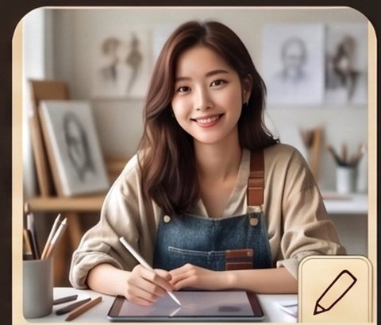

WEEKLY REPORT · 2026-08-30
2026년 8월 30일 주간보고
공방이 문을 연 첫 주(8/27~8/30)의 기록. 아직 다음 보고가 없어 이번 한 번은 개업 이후 전체 활동을 담았고, 다음 주부터는 실제 지난 7일치만 기록합니다. 없는 일을 지어내지 않습니다.

기획서 10건을 새로 썼다 (planning/ 전체). 그림책 7편에 이어, 이번 주 후반에는 창비어린이 신인문학상 요강(원고지 30매 내외)에 맞춘 단편 3편 — 「태오의 안녕」(영 케어러), 「할머니의 종」(독거노인 고독사), 「삼각김밥 두 개」(아동급식카드 낙인) — 의 로그라인과 줄거리 개요를 하루 만에 완성했다.

drafts/ 기준 원고 다수를 집필·개정했다. 「반딧불이 콩콩이」는 v1→v2, 그림책 4편은 v1~v2, 신작 단편 3편은 각 v1로 초고를 완결했다. 분량 목표(원고지 27~33매)를 맞추느라 매번 2~4차례 장면·대사를 보강했다.

reviews/ 기준 10편 전체를 심사했다. 신작 단편 3편은 모두 1심에서 "통과" 판정을 받았고, 분량은 세 편 다 27~28매 선으로 요강 하한에 가깝다는 점을 기록에 남겼다.

「반딧불이 콩콩이」에 SVG 삽화 11컷을 넣어 페이지 넘기기 리더로 만들었고, 8인 크루 실사 프로필 사진을 전원 반영했다. 이번 주 신작 단편 3편은 애초에 삽화 없는 텍스트 전용 기획이라 새로 진행한 삽화 작업은 없다.
그림책 트렌드 리포트 1건(research/2026-08-28-그림책-트렌드.md)을 작성했다. 매주 저작권·유사성 점검 클라우드 루틴이 이번 주 실행되긴 했으나, GitHub 쓰기 권한 문제로 결과가 저장소에 아직 반영되지 못했다 — research/ 폴더에 이번 주 주간보고 파일은 없다.
완성작 7편에 홍보 한 줄 카피와 서재 후크를 썼다(marketing/ 7건). 이번 주 새로 통과한 단편 3편은 아직 카피 작업이 이어지지 않았다 — 활동 없음.
개업 초기 정합성 점검 1건(admin/2026-08-28-점검.md)에 이어, 공모전 출품 준비 체크리스트(admin/2026-08-30-창비공모-체크리스트.md)를 새로 만들어 필명("다세파") 확정 여부와 요강 조건을 기록했다.
완성작 10편 전체에 문학적·아동 심리 발달 관점의 자문을 남겼다(advisory/ 10건). 공모전 출품 준비 중인 두 작품("우리만 아는 레시피", "빈자리")의 개정판 자문도 진행했지만, 그 두 편은 응모 자격 보호를 위해 원고 자체가 비공개 상태라 이 보고에는 제목만 남긴다.